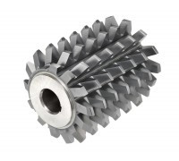

Фрези черв'ячні, довбяки, Т-обрФрезы червячные, долбяки, Т-обр
Фреза черв'ячна з хвостовиком М 4.0 кл.А 20гр 5гр12 мин СИЗ Р6М5К5 D=55 мм 2512-4003 КМ5Фреза червячная с хвостовиком М 4.0 кл.А 20гр 5гр12 мин СИЗ Р6М5К5 D=55 мм 2512-4003 КМ5
ОписОписание
Фреза черв'ячна з хвостовиком М 4.0 кл.А 20гр 5гр12 мин СИЗ Р6М5К5 D=55 мм 2512-4003 КМ5 — професійний металорізальний інструмент для нарізання зубів зубчастих коліс. Основні параметри: різьба M4.0 та КМ5. Виготовлено з матеріалу кобальтова швидкорізальна сталь Р6М5К5, що забезпечує стійкість різальної кромки при обробці нержавіючих, жароміцних і важкооброблюваних сталей. Виробник: СИЗ. Інструмент перевірений і готовий до відвантаження. В наявності 2 шт. на складі у Харкові. Ціна 19200 грн без ПДВ. Опт і роздріб, відправлення по всій Україні. Замовлення від 2 000 грн.Фреза червячная с хвостовиком М 4.0 кл.А 20гр 5гр12 мин СИЗ Р6М5К5 D=55 мм 2512-4003 КМ5 — профессиональный металлорежущий инструмент для нарезания зубьев зубчатых колёс. Основные параметры: резьба M4.0 и КМ5. Изготовлен из материала кобальтовая быстрорежущая сталь Р6М5К5, что обеспечивает стойкость режущей кромки при обработке нержавеющих, жаропрочных и труднообрабатываемых сталей. Производитель: СИЗ. Инструмент проверен и готов к отгрузке. В наличии 2 шт. на складе в Харькове. Цена 19200 грн без НДС. Опт и розница, отправка по всей Украине. Заказ от 2 000 грн.
ХарактеристикиХарактеристики
| Тип інструментуТип инструмента | Зуборізний інструментЗуборезный инструмент |
|---|---|
| КатегоріяКатегория | Фрези черв'ячні, довбяки, Т-обрФрезы червячные, долбяки, Т-обр |
| РізьбаРезьба | M4.0M4.0 |
| МатеріалМатериал | Р6М5К5 / Р6М5Р6М5К5 / Р6М5 |
| Конус МорзеКонус Морзе | КМ5КМ5 |
| Напрямок різьбиНаправление резьбы | праваправая |
| ВиробникПроизводитель | СИЗСИЗ |
| СтанСостояние | новийновый |
| Код товаруКод товара | FLK-09564FLK-09564 |
| НаявністьНаличие | 2 шт.2 шт. |